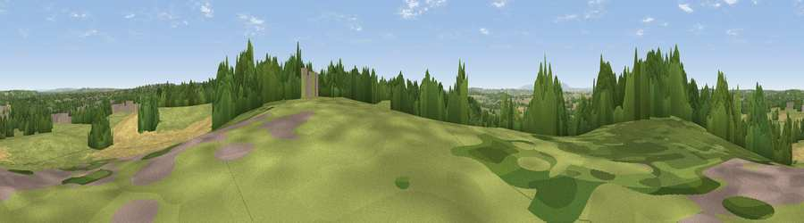

Viewpoint near Lower Penn
#25566 in England · top 46% of its area beats it · near Lower PennThe view, rendered

A 360° render of this exact spot computed from the terrain model, tree cover and land cover — summer colours, afternoon light, calibrated against photographs of famous viewpoints. Real trees, hedges and buildings will differ in detail.
The panorama
Grey silhouette: terrain skyline in each direction (720 bearings, Earth curvature and refraction included). Dashed green: skyline with trees (+15 m) and buildings (+8 m) as obstacles. Blue strip: how far the ground is visible on each bearing.
Where the view opens
Wedge length = distance to the farthest visible ground on that bearing (vegetation-aware). Rings at 10, 25 and 50 km.
What fills the view
36% grassland · 27% cropland · 27% woodland · 9% built-up
Angular shares of the visible panorama (visual magnitude), not map area. Landscape diversity 0.56 (0–1 Shannon).
Key numbers
More beautiful places nearby
The staircase of upgrades: each row has a higher view potential than everything closer. Driving times are estimates from straight-line distance, calibrated against real road routing — check an actual route before setting out.
| Place | Direction | Drive | Score |
|---|---|---|---|
| Viewpoint near Lower Penn | WNW · 0 km | ~2 min | 55.9 |
| Viewpoint near Lower Penn | SSW · 1 km | ~2 min | 58.8 |
| Viewpoint near Ettingshall Park | E · 4 km | ~10 min | 59.3 |
| Viewpoint near Gospel End | SE · 5 km | ~12 min | 62.3 |
| Viewpoint near Oakham | SE · 11 km | ~21 min | 68.3 |
| Viewpoint near Oakham | SE · 11 km | ~21 min | 68.8 |
| Viewpoint near Enville | SSW · 12 km | ~23 min | 73.1 |
| Viewpoint near Clent | SSE · 16 km | ~29 min | 74.3 |
52.55832, -2.18323 · source: screening · position refined by local search. Computed location — check access rights before visiting.